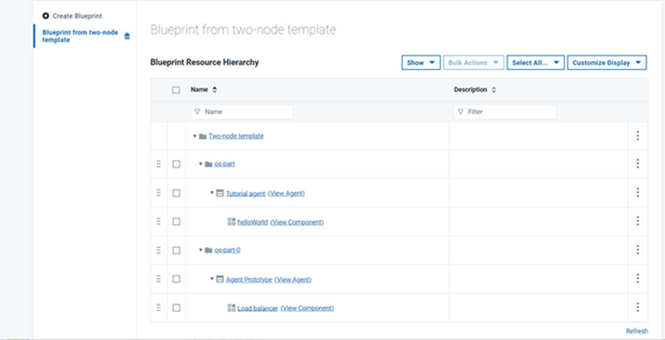

To create an application blueprint, map the components
of the application to a resource template.
Procedure
- Click Applications, click your application,
and then click Blueprints.
-
Click Create Blueprint.
- Specify a name for the blueprint and select the resource
template.
- Click Save.
The
new blueprint opens, showing the contents of the template, including
the agent prototypes.
-
Map the components of the application to the agent prototypes:
-
Hover the mouse over an agent prototype and then click .
-
In the window that opens, select a component, specify its information, and click
Save.
-
Repeat this process to add the application components to the agent prototypes.
Depending on how your application is organized, you can add the same component to
multiple agent prototypes or multiple components to the same agent prototype.
Note: If you create an environment from this blueprint and then add component mappings to
the blueprint, the component mappings are also added to the environment. However, if you remove
component mappings from the blueprint, the component mappings are not removed from the
environment.
Results
The complete application blueprint shows how the components are mapped to the
agent prototypes. The following example shows a simple blueprint. The resource template
contains two agent prototypes. In the blueprint, one component is mapped to each agent
prototype.

What to do next
Create environments that are based on this blueprint.